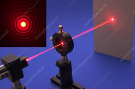

Introducere în curs
Difracţia pe o fantă circulară.
Introducere în curs
Difracția pe o fantă circulară este un fenomen important în studiul undelor, în special în optică. Când undele luminei trec printr-o deschidere circulară, ele se comportă diferit față de cele care trec printr-o fantă dreptunghiulară. Acest curs va explora fundamentele difracției pe o fantă circulară, legile care o guvernează, modelele de difracție create, precum și aplicațiile practice ale acestui fenomen.
Principiile Difracției
Difracția este un fenomen care apare datorită naturii ondulatorii a luminii. Când undele întâlnesc un obstacol sau o deschidere, acestea se îndoaie în jurul acestuia, iar porțiunile de undă interferează între ele. Difracția poate fi înțeleasă folosind principiul lui Huygens, care afirmă că fiecare punct de pe frontul de undă acționează ca o sursă de unde secundare.
Diafragma și rezoluția circulară
Difracția pe o Fantă Circulară
Difracția pe o fantă circulară se referă la comportamentul luminii atunci când aceasta traversează o deschidere circulară. Modelul de difracție generat depinde de raportul dintre dimensiunea fantei și lungimea de undă a luminii.
Ecuația difracției:Pentru o fantă circulară, difracția este descrisă prin următoarea relație:
Relația de difracție:asin(θ)=mλ
unde:
- a: este diametrul fantei circulare,
- θ: este unghiul de difracție,
- m: este ordinea difracției (un număr întreg),
- λ: este lungimea de undă a luminii.
Observarea Difracției
Observarea difracției pe o fantă circulară se face prin utilizarea unei surse de lumină monocromatică. Atunci când lumina trece prin deschiderea circulară, pe un ecran plasat la o distanță considerabilă, se formează un model de difracție caracterizat prin dungi luminoase concentrice alternând cu zone întunecate. Aceste dungi reprezintă franjele de difracție, iar modelul este similar cu un sistem de cercuri.
Modelul de difracție:
- Centrul modelului de difracție este un maxim luminos, urmat de cercuri concentrice de intensitate luminoasă alternativă. Primul maxim apare în centru, urmat de o serie de minime și maxime suplimentare, care scad în intensitate pe măsură ce ne îndepărtăm de centru.
Difracția pe deschidere circulară. O configurație care demonstrează un caz clasic de difracție Frounhofer pe o deschidere circulară. Aici un fascicul laser cu diodă (635 nm) este incident pe o deschidere mică (diafragmă, orificiu) cu diametrul de 35 microni. Modelul de difracție rezultat (numit disc Airy) este observat pe un ecran la aproximativ 15 cm distanță. Inserarea arată un prim-plan al modelului de difracție, realizat într-o fotografie separată. Aceasta este o demonstrație clasică a naturii ondulatorii a luminii.
Aplicații ale Difracției
Difracția pe o fantă circulară are numeroase aplicații în diferite domenii, inclusiv:
- Optica:Difracția circulară este crucială în analiza opticii sistemelor de lentile și a instrumentelor optice precum microscopurile.
- Astronomie:Fenomenul de difracție este esențial în studiul radiației luminoase de la stele și alte corpuri celeste.
- Telecomunicații:Difracția influențează propagarea semnalelor radio și este importantă pentru proiectarea antenelor.
- Spectroscopie:Difracția circulară este utilizată pentru a analiza spectrele de lumină, facilitând identificarea substanțelor chimice.